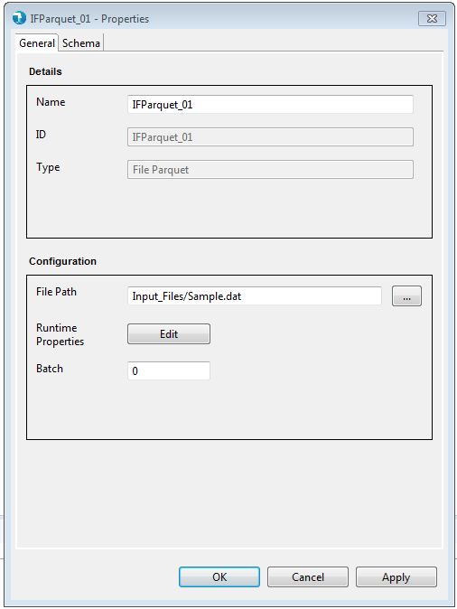
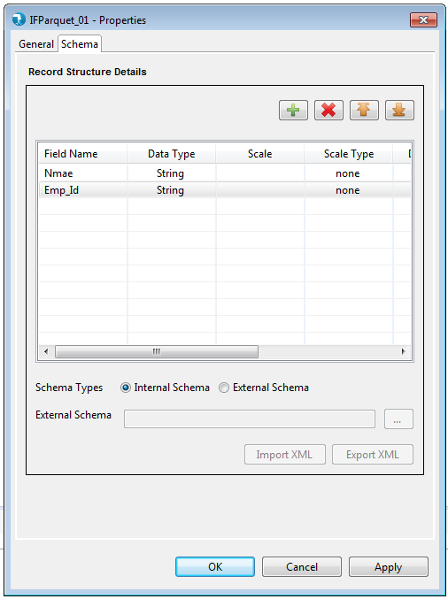
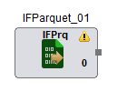
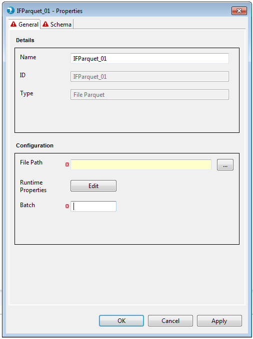
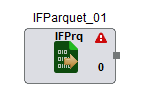

Properties for the Input File Parquet component can be viewed by double clicking the component on canvas.The properties window can also be opened by right-clicking the component icon on the job canvas and clicking on the 'Properties' option.
The properties contain a 'General' tab and a 'Schema' tab. Common properties are present in the General tab. Schema tab displays the option to accept the field schema i.e. field name, data type, scale etc.

- Name - The identifier for the component. This is a mandatory property. This property is pre-populated with the component name, i.e. 'IFParquet' followed by an incremental number. It can be changed to any custom name. The name property has following restrictions:
- Must be specified and should not be blank.
- Must be unique across the job.
- Accepts only alphabets (a-z), numerals (0-9) and 4 special characters: "_", "-", ",", " " (space)<./span>
- ID - ID field will specify unique id for every component.
- Type - Type defines the type of component within the category. This typically is the name of the component. This is a non editable field.

Schema is mandatory for input file parquet component. Schema tab defines the record format on the out port of the input file parquet component. A field in schema has multiple attributes as described below.
- Internal - User is provided a Grid to enter the internal schema of the Input Parquet file.
- Field Name - The name for the field. This is a mandatory attribute.
- Data type - The data type for the field. This is a mandatory attribute. The default data type is "String". Check supported data types page for list of supported data types.
- Scale - The number of digits to the right of decimal point. Scale is defined for Double, Float or BigDecimal field.
- Scale Type - Scale Type accepts values as implicit or explicit for BigDecimal field and none for other data types. Explicit considers the length of '.' in precision and implicit ignores length of '.' precision for the BigDecimal field.
- Date Format - The format for date data type. Refer to Date formats page for acceptable date formats.
- Precision - The number of significant digits (all digits except leading zeros and trailing zeros after decimal point).
- Field Description - The description for the field.
- External
- Import XML- User can provide an external Hydrograph Schema file of XML format. A text box is provided to either manually type or use the Browse button to select the schema file from File system. The External schema file path is resolved during run time and replaced with the contents of the file in the Job XML.
- Export XML- User can provide an external directory path to export Hydrograph Schema file in XML format. A text box is provided to either manually type or use the Browse button to specify the output directory on File system. The External directory path is resolved during run time and the xml schema file is saved in it.
The input file parquet component applies validations to the mandatory fields as described above. Upon placing the input file parquet component on job canvas for the first time (from component palette), the component shows up a warning icon as mandatory properties are not provided.

The properties window also displays error icon on mandatory fields if it has an incorrect value. The error icon is displayed on the tab as well, if any of the field within the tab has some error.

If the properties window has some error even after user visit's it once, then the warning icon on the input file parquet component on the job canvas changes to error icon. This error icon is removed only when all the mandatory fields are supplied with correct values.
